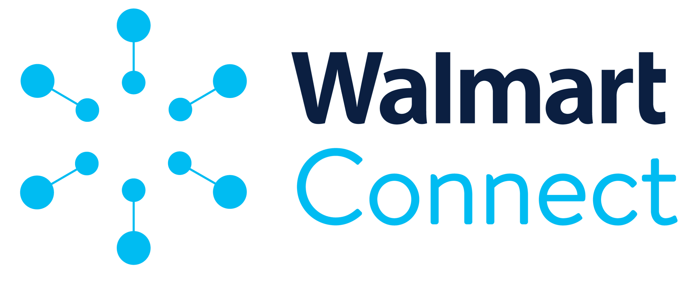

Walmart Connect
April 27, 2026
Official Walmart Connect announcement for Connect Select, a curated CTV marketplace inside the Walmart DSP giving advertisers access to premium inventory from VIZIO, Paramount, Warner Bros. Discovery, and major SSPs, powered by Walmart first-party shopper data. Also announced expanded DSP integrations with Pacvue and Skai for full-funnel campaign management.
Read Coverage →
Walmart Connect
April 8, 2026
Official Walmart Connect announcement covering expanded social media capabilities including self-serve access for Meta and TikTok, closed-loop measurement via LiveRamp's data clean room across Meta, TikTok, and Pinterest, and a new Add-to-Cart feature letting customers add products directly to their Walmart cart from social ads.
Read Coverage →
Digiday
January 6, 2026
Digiday covered the launch of a partnership connecting Walmart Connect's first-party purchase data with Meta's influencer ecosystem, enabling agencies to identify creator partners based on what their followers actually buy rather than follower counts alone. Bimbo Bakeries was among the first brands using the product.
Read Coverage →
September 20, 2022
Adweek covered the launch of Walmart Connect's innovation partner program establishing TikTok and Snap as inaugural partners, enabling advertisers to reach Walmart audiences on TikTok for the first time with closed-loop measurement against real purchase data.
Read Coverage →
AdExchanger
September 20, 2022
AdExchanger covered the TikTok and Snap partnerships as first-to-market and first-of-their-kind, noting that Walmart Connect was the first retailer to provide deterministic closed-loop measurement for campaigns running on TikTok.
Read Coverage →
Marketing Dive
September 20, 2022
Marketing Dive covered the TikTok and Snap innovation partnerships, describing how Walmart Connect would own the full advertiser relationship including campaign crafting, execution, and measurement rather than simply passing data to the platforms.
Read Coverage →
September 20, 2022
Ad Age covered Walmart Connect's investment in social commerce measurement partnerships with TikTok, Snap, and Roku as part of a broader strategy to connect Walmart's shopper data to performance across video and social platforms.
Read Coverage →
Walmart Connect
August 25, 2021
Official Walmart Connect announcement for the launch of the Walmart DSP, a first-of-its-kind demand-side platform built in partnership with The Trade Desk, combining Walmart's first-party omnichannel data with programmatic buying across display, streaming video, mobile, audio, and CTV.
Read Coverage →
Marketing Dive
January 28, 2021
Marketing Dive covered the announcement of Walmart Connect and its foundational partnership with The Trade Desk, describing the DSP strategy as central to Walmart's ambition to become a top-10 advertising platform in the US.
Read Coverage →
CNBC
January 28, 2021
CNBC covered the founding partnership between Walmart and The Trade Desk to build the Walmart DSP, reporting that Walmart aimed to grow its advertising business to become one of the top 10 ad platforms in the US using its first-party shopper data as the core differentiator.
Read Coverage →
Gallup Business Journal
June 16, 2016
A research article co-authored during my time as a Business Analyst at Gallup, based on Gallup World Poll data across 22 EU countries and original in-person interviews conducted across France, Spain, Poland, Germany, and the Netherlands. The research examined the EU youth employment crisis and made the case for small-business entrepreneurship as the structural solution.
Read Coverage →